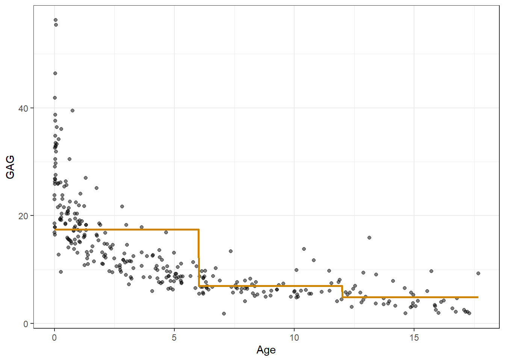
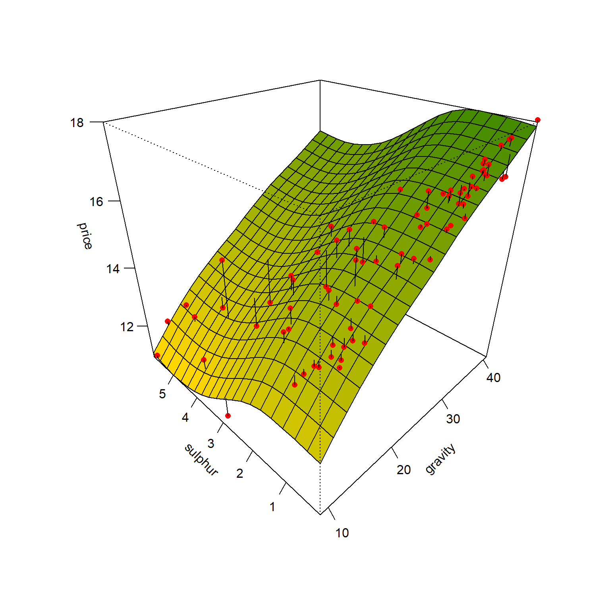

Regressão por splines e modelos aditivos generalizados
Regressão por splines
Os métodos de regressão não-paramétrica ou semi-paramétrica, são geralmente superiores se comparados aos paramétricos dada sua alta flexibilidade. Dentre estes destacam-se os modelos aditivos generalizados (generalized aditive models - GAM). O GAM foi introduzido por Hastie et al. (1987) e consiste em uma extensão dos modelos lineares generalizados (Generalized Linear Models - GLM), com preditores lineares somados de funções de suavização não paramétricas dos preditores, geralmente de forma não-linear. Para falar sobre modelos aditivos generalizados é necessário primeiro introduzir a regressão por funções de passo, os polinômios por partes e a regressão por splines.
Regressão por funções de passo ou escada
A regressão por funções de passo ou escada consideram a divisão do domínio do preditor, estimando uma constante para cada divisão. É um modelo que se parece com uma regressão por árvore de decisão para uma variável, porém os algoritmos e, portanto, modelos obtidos são distintos.
Para realizar a divisão no domínio pode-se utilizar de funções indicadoras \(I(.)\) que recebem 1 caso a condição seja satisfeita e 0 caso contrário. São, portanto, criadas divisões a partir da definição de nós no espaço do preditor, \(\xi_1, \xi_2, \ldots, \xi_G\), onde \(G\) é o número de nós (JAMES et al., 2013). Por exemplo, para dois nós:
\[ \begin{matrix} C_1(x) = I(x<\xi_1)\\ C_2(x) = I(\xi_1 \leq x < \xi_2)\\ C_3(x) = I(x \geq \xi_2)\\ \end{matrix} \] Para qualquer valor de \(x\) é importante observar que \(C_1(x)+C_2(x)+C_3(x)=0\). Um modelo de regressão por funções de passo para dois nós pode ser definido conforme segue. Pode-se observar que o resultado estimado será \(\beta_0+\beta_1\) ou \(\beta_0+\beta_2\) ou \(\beta_0+\beta_3\), se \(C_1(x)\) ou \(C_2(x)\) ou \(C_3(x)\) seja unitário (JAMES et al., 2013). \[ \hat{y}=\beta_0+\beta_1C_1(x)+\beta_2C_2(x)+\beta_3C_3(x) \] Considerando \(\beta_0 = \overline{y}\), \(\beta_j=(\overline{y}|\xi_{j-1}\leq x <\xi_{j})-\overline{y}\), ou seja, cada coeficiente que multiplica as funções indicadoras consiste na diferença entre a média das observações na divisão e a média geral. Ao final, o valor previsto consiste em uma constante que é a média das observações de treino da região. Seja um conjunto de dados da concentração do químico GAG na urina de crianças de 0 a 17 anos. Um modelo de regressão por funções de passo considerando duas divisões, nas idades de 8 e 16 anos, é plotado abaixo.
Obviamente modelos mais complexos podem ser considerados, por exemplo, modelos polinomiais para cada região.
Polinômios por partes
Uma regressão polinomial cúbica por partes considerando apenas um nó ou divisão consiste em um modelo definido da seguinte forma: \[ \hat{y} = \biggl\{ \begin{matrix} \beta_{01} + \beta_{11}x + \beta_{21}x^2 + \beta_{31}x^3, x_i < \xi\\ \beta_{02} + \beta_{12}x + \beta_{22}x^2 + \beta_{32}x^3, x_i \ge \xi, \end{matrix} \]
onde \(\xi\) consiste em nó ou divisão no domínio da variável regressora \(x\) e os coeficientes diferem para cada uma das regiões obtidas. Para o exemplo de concentração de GAG em urina de adolescentes, um modelo de regressão polinomial cúbico por partes, considerando dois nós para idades de 6 e 12, pode ser plotado como segue.

Um problema deste modelo é a descontinuidade e falta de suavidade nas divisões. Para garantir a continuidade, uma restrição de igualdade na transição pode ser considerada.
Uma forma interessante de definir os nós é a partir dos percentis, de forma que em cada intervalo exista um número igual de observações.
Regressão por spline cúbica
Considerando uma função de uma variável \(f(x)\), \(x\) \(\in \mathbb{R}^1\), seja \(h_m(x)\) a \(m\)-ésima transformação de \(x\), \(m=1, \ldots, M\). Um modelo considerando esta transformação pode ser representado conforme segue. \[ \begin{matrix} f(x) = \sum_{i=1}^M \beta_{(m-1)} h_m(x) \\ \end{matrix} \]
As funções de transformação \(h_m(X)\) para um modelo de regressão por spline cúbico com, por exemplo, dois nós, são geralmente \(h_1(x) = 1\), \(h_2(x) = x\), \(h_3(x) = x^2\), \(h_4(x) = x^3\), \(h_5(x) = (x - \xi_1)_+^3\), \(h_6(x) = (x - \xi_2)_+^3\), onde \(\xi_1\) e \(\xi_2\) são nós e \(t_+\) denota a parte positiva desses domínios, isto é: \[ (x - \xi)_+^3 = \biggl\{ \begin{matrix} \text{0, }x< \xi\\ (x - \xi)^3\text{, } x\ge\xi \end{matrix} \]
Considerando essas transformações na Equação anterior, a função obtida é um polinômio cúbico por partes. Tal função pode ser escrita como segue, sendo uma função cúbica para todo o domínio adicionada de termos cúbicos para as divisões realizadas no domínio. \[ \hat{y}=\beta_0 + \beta_1x + \beta_2x^2 + \beta_3x^3 + \beta_4(x-\xi_1)_+^3 + \beta_5(x-\xi_2)_+^3 \]
Para garantir a continuidade da função resultante nos nós e considerar os quatro parâmetros para cada uma das três regiões resultantes, podem ser definidas restrições de igualdade das funções nos nós. Para uma transição suave nos nós, a continuidade nas derivadas de primeira e segunda ordem também podem ser adicionadas. O modelo resultante tem seis parâmetros. De forma geral, uma spline cúbica terá \(4 + g\) graus de liberdade, onde \(g\) é o número de nós (JAMES et al., 2013). Para o mesmo problema de previsão de GAG em urina de adolescentes, considerando três nós nas idades de 4, 8 e 12 anos, o gráfico a seguir plota uma estimativa por regressão via spline cúbica.
Pode-se observar que, para o exemplo estudado, existe um volume maior de observações para os primeiros anos de idade. Uma escolha mais razoável para os nós seria a definição destes a partir da distribuição das observações no domínio da variável regressora, de forma a garantir um número aproximadamente igual de observações entre os nós. Tomando os quantis de 25, 50 e 75%, tem-se o modelo atualizado a seguir.
Regressão por spline natural cúbica
Outro detalhe considerado na regressão por spline cúbica é a linearização nas caudas. Tal modificação visa diminuir a variabilidade nos extremos do modelo. Para tal deve-se apenas excluir os termos envolvendo as transformações quadrática e cúbica para todo o domínio de \(x\), isto é, \(h_3(x) = x^2\), \(h_4(x) = x^3\). Este modelo é conhecido como regressão por spline natural cúbica (JAMES et al., 2013).
Suavização de modelos de regressão por spline
A realização da estimativa de um modelo de regressão por spline é feita minimizando uma função perda quadrática, isto é, \[ L=\sum_{i=1}^N(y_i-f(x_i))^2\text{.} \] Porém, ao se utilizar de um modelo de regressão por spline, é possível fazer tal função perda chegar a um valor nulo, interpolando todas observações de treino, o que implicará, obviamente em um ajuste perfeito para os dados de treino. Porém, tal modelo apresentará alta variância e, consequentemente, baixo desempenho ao ser aplicado em dados futuros. Para evitar tal problema, um termo de suavização é adicionado à função perda em otimização, isto é: \[ L=\sum_{i=1}^N(y_i-f(x_i))^2 + \lambda\int f''(t)^2dt, \] onde o termo \(\int f''(t)^2dt\) mede a soma dos quadrados da variação na inclinação da função, de forma a controlar o grau de rugosidade do modelo. Se \(\lambda \rightarrow 0\), tem-se o modelo mais rugoso possível, que seria um modelo com \(N\) nós, ou seja, um nó para cada observação de treino, apresentando \(g+2\) graus de liberdade, o qual apresentará alta variância. Por outro lado, se \(\lambda \rightarrow \infty\), tem-se um modelo linear que seria o mais suave possível, apresentando apenas dois termos e, portanto 2 graus de liberdade. O parâmetro de suavização \(\lambda\) controla o grau de suavidade do modelo e, portanto, o número efetivo de graus de liberdade. A escolha de \(\lambda\) deve ser realizada por validação cruzada e grid search (JAMES et al., 2013).
Existem outros métodos de regressão por splines os quais não serão abordados aqui. Dentre estes destacam-se a regressão local. O leitor é convidado a ler as referências utilizadas neste texto para mais informações.
Modelos aditivos generalizados (GAM)
Conforme visto, os modelos de regressão por splines são em função de uma variável. Os modelos aditivos generalizados visam a extensão dos modelos de regressão por splines para o caso de múltiplas variáveis regressoras de interesse. Os modelos aditivos generalizados visam extender os modelos de regressão múltipla, \[ \hat{y}=\beta_0+\beta_1x_1+\beta_2x_2+\ldots+\beta_kx_k, \] substituindo os coeficientes lineares \(\beta_j\), por uma função não-linear do termo \(x_j\), \(f(x_j)\). Tal função pode ser, por exemplo, uma spline natural. Um modelo GAM pode ser descrito, portanto, conforme segue. \[ \hat{y}=\beta_0+\beta_1f_1(x_1)+\beta_2f_2(x_2)+\ldots+\beta_kf_k(x_k), \] Seja um conjunto com 99 observações de distintos campos de Petróleo dos EUA contendo o preço médio do barril de petróleo em função do grau de pureza e do percentual de enxofre. Deseja-se prever o preço médio do barril em função de tais variáveis.
Considerando um GAM a partir de splines naturais em função dos dois parâmetros, pode-se um modelo para preço do barril do Petróleo.
par(mfrow = c(1,2))
plot(gam2, se=TRUE, col ="red", lwd = 2)O GAM estimado para tal caso é plotado a seguir.

Dentre algumas limitações dos modelos aditivos generalizados pode-se destacar a impossibilidade de incluir diretamente interações entre os preditores, uma vez que os modelos são aditivos. Entretanto, é possível gerar variáveis adicionais que consistem no produto de variáveis preditoras para considerar a interação.
Referências
Hastie, Trevor, and Robert Tibshirani. “Generalized additive models: some applications.” Journal of the American Statistical Association 82.398 (1987): 371-386.
James, G., Witten, D., Hastie, T., & Tibshirani, R. (2013). An introduction to statistical learning (Vol. 112, p. 18). New York: springer.